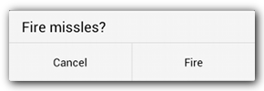

name: inverse layout: true class: center, middle, inverse --- # Android Interface Homme Machine ENSSAT 2021-2022 Guillaume Châtelet --- layout:false ## plan - Activités - Layouts et Views - Adapter - Toast, SnackBar, Dialog & Menus - IHM Avancée --- template: inverse # Activités "Une activité par ... activité" --- ## Activité : Une page de l'application Classe java qui hérite de la classe du SDK .remark-code[Activity] Elle doit être référencée dans le Manifest de l'application ### Contenu - Chaque activité décrit ce qui va être affiché dans la page : .remark-code[Layout] Bonne pratique : .green[Une seule activité par .remark-code[Activity]] - Elle décrit aussi les actions qui vont être faite quand l'utilisateur interagit avec l'interface Bonne pratique : .green[Les actions doivent être courte pour assurer une bonne fluidité de l'application] ### Context Une activité est un Context. Les Context permettent d'interagir avec le système --- ## Principe de base ### Vie et mort d'une activité - Créés par le système en utilisant les Intent .remark-code[ val intent = Intent(context, ReadMailActivity::class.java) context.startActivity(intent)] - L'interface de l'application est un empilement d'activités - Tués par l'utilisateur (Touche "Back") ou dans le code .remark-code[finish()] ### Le code doit réagir au demande du système Coder une activité revient à coder les actions à faire quand le système stimule l'activité. Le système va appeler des méthodes dédiées appelées ".green[Callbacks]" - .remark-code[onCreate()], .remark-code[onStart()], .remark-code[onResume()] - .remark-code[onDestroy()], .remark-code[onStop()], .remark-code[onPause()] --- ## Cycle de vie d'une activité ### <center> <img width="50%" src="img/activity_lifecycle.png" /> </center> --- ## Empilement d'activité ### <center> </center> --- ## Réactivité des activités Les callbacks sont appelés par le système, elles sont exécutés dans le thread de l'UI Aucun traitement long ne doit se faire dans ces méthodes sous peine de blocage de l'UI Quelques traitements long : - accès disque - accès réseau - long calcul - attentes actives Voir le cours sur la communication et le traitement de tache de fond pour gérer ce problème --- template: inverse # Layouts et Views "Des vues dans des layouts dans des layouts dans du xml" --- ## Layout : agrégation de vues et de Layouts La première chose à faire dans une activité .remark-code[Dans la callback onCreate override fun onCreate(savedInstanceState: Bundle?) { super.onCreate(savedInstanceState) setContentView(R.layout.activity_read_mail) }] ### Un layout est une agrégation de vue et de sous-layout. Elles n'ont pas d'affichage propre Permettent de ranger leurs enfants dans un certain ordre ### Développement Les layouts sont décrits en XML dans les ressources : .remark-code[src/main/res/layout/activity_read_mail.xml] --- ## Les layouts Android ### FrameLayout - zone d'écran pour empiler des vues les une au dessus des autres ### LinearLayout - zone d'écran pour empiler des vues les une à coté des autres (horizontalement ou verticalement ### TableLayout et GridLayout - zone d'écran pour aligner des vues dans des tables ou des grilles (peu utilisées dans les faits) ### ConstrainedLayout (RelativeLayout deprecated) - zone d'écran pour aligner des vues les unes par rapport aux autres Bonne pratique : .green[Plus le layout est simple, plus il est rapide à afficher] --- ## Les vues Android Widgets avec un affichage et des données Peuvent réagir aux interaction utilisateur ### TextView, ImageView - affiche un text, une image ### Button, CheckBox, RadioButton - avec une interaction "onClick" ### EditView - dérive de TextView, mais invite l'utilisateur à rentré une chaîne de caractère - possibilité de spécialisé le clavier virtuel (mail, numéro de téléphone, nombre, password, ...) --- ## Attributs des Layouts et Vues .remark-code[ TexView in layout.xml <TextView android:id="@+id/text" android:layout_width="match_parent" android:layout_height="match_parent" android:text="@string/hello_world" /> ] .left-column[ Dimension indépendante de la résolution - .remark-code[dp] : pour les distances - .remark-code[sp] : pour les tailles de police - .remark-code[match_parent|wrap_content] : relatives Visibilité : .remark-code[android:visibility] - .remark-code[visible|invisible|gone] Background : .remark-code[android:background] - Drawable : .remark-code["@drawable/background"] - couleur : .remark-code["@color/bg_01"|"#FF0000"] ] .right-column[ Gravité : - .remark-code[android:gravity] : dans la zone d'affichage - .remark-code[android:layout_gravity] : dans le parent Espaces : - .remark-code[android:margin] : dans la zone d'affichage - .remark-code[android:padding] : dans le parent ] --- ## Layouts et Vues dans le code Les fichiers .remark-code[layout.xml] sont analysés par le .remark-code[LayoutInflater] qui transforme le XML en objet java à coup de réflection. Les paramètres du XML sont donnés aux objets mais on a souvent besoin de customiser dans le code. Dans le code, on peut : - retrouver les objets java créés - modifier dynamiquement des attributs en utilisant les objets - enregistrer des callbacks pour les actions utilisateurs Point Jetpack : on peut même maintenant déclarer des objets dans le XML comme porteurs des données à afficher. Modifier les valeurs dans de cet objet dans le code modifie automatiquement l'affichage. Attention au nombre de mise à jour de l'affichage que cela peut induire. --- ## Exemple de code (Java/Kotlin) .remark-code[Exemple en Java : helloText = (TextView) findViewById(R.id.text); button = (Button) findViewById(R.id.button); button.setOnClickListener(new View.OnClickListener() { @Override public void onClick(View view) { helloText.setText("button clicked"); } }); Exemple en Kotlin : helloText = findViewById(R.id.text) as TextView button = findViewById(R.id.button) as Button button.setOnClickListener { view -> helloText.text = "button clicked"} ] Kotlin est fortement poussé par Google. Les exemples de code suivant seront en Kotlin. --- template: inverse # Toasts, SnackBars, Dialogs & Menus "Breakfast time" --- ## Toasts .remark-code[afficher un Toast : val text = "Message saved as draft" val toast = Toast.makeText(context, text, Toast.LENGTH_LONG) toast.show()] # <center> <img width="50%" src="img/toast.png" /> <center/> --- ## SnackBar .remark-code[afficher une SnackBar : val text = "Archived"; val snackbar = Snackbar .make(findViewById(android.R.id.content), text, Snackbar.LENGTH_LONG) .setAction("UNDO") { view -> /*TODO undo*/ } snackbar.show(); ] <center> <center/> --- ## Dialogs .remark-code[afficher un Dialog : val listener = { dialog: DialogInterface, which: Int -> /* TODO handle click id = POSITIVE | NEGATIVE | NEUTRAL */ } val dialog = AlertDialog.Builder(getActivity()) .setMessage(R.string.dialog_alert_title) .setPositiveButton(R.string.fire, listener) .setNegativeButton(R.string.cancel, listener) .create() dialog.show() ] ### <center>  <center/> --- ## Menus .remark-code[définition dans menu.xml <?xml version="1.0" encoding="utf-8"?> <menu xmlns:android="http://schemas.android.com/apk/res/android"> <item android:id="@+id/new_game" android:icon="@drawable/ic_new_game" android:title="@string/new_game" android:showAsAction="ifRoom"/> <item android:id="@+id/help" android:icon="@drawable/ic_help" android:title="@string/help" /> <</menu>] ### <center> <img src="img/actionbar.png" /> <center/> --- ## Menus : Callbacks .remark-code[Callback de création override fun onCreateOptionsMenu(menu: Menu): Boolean { menuInflater.inflate(R.menu.menu_main, menu) return true } ] .remark-code[Callback de sélection override fun onOptionsItemSelected(item: MenuItem): Boolean { return when (item.itemId) { R.id.action_settings -> /* TODO launch the settings */ true else -> super.onOptionsItemSelected(item) } } ] --- template: inverse # Adapter "Adapter une liste de donnée en une liste de vue" --- ## ListView pour afficher des listes Les .remark-code[ListView] sont des vues pour afficher des listes de données Nécessite un .remark-code[Adapter] chargé de : - créer des vues pour les items de la liste - remplir les vues avec les données pour chaque item Seulement les items affichés ont des vues Le SDK permet de recycler les vues qui ne sont plus affichées .remark-code[ exemple : val listView = findViewById(R.id.list) as ListView listView.adapter = adapter] --- ## Code de l'Adapter .remark-code[ exemple : val adapter = object : BaseAdapter() { override fun getCount(): Int = list.size override fun getItem(position: Int): Any = list[position] override fun getItemId(position: Int): Long = list[position].id override fun getView(position: Int, convertView: View?, parent: ViewGroup?): View { val view = if (convertView != null) convertView else View.inflate(parent.context, android.R.layout.simple_list_item_1, null); val textview = view.findViewById(android.R.id.text1) as TextView textview.text = list[position].data return view } }] --- ## RecyclerView Même système d'.remark-code[Adapter] que pour la .remark-code[ListView]. Différents arrangements des views est possible : - Linéaire horizontal ou vertical - En grille aligné ou en quinconce Réarangement des items est possible Des actions comme "slide to delete" ou "slide to archive" L'animation des views est prévue aussi Attention: Les .remark-code[RecyclerView] impose d'encapsuler les vues des items dans des .remark-code[RecyclerView.ViewHolder]. La creation et la mise à jour se fait en deux temps. --- ## RecyclerView en action .remark-code[ exemple : class CustomViewHolder(itemView: View): RecyclerView.ViewHolder(itemView) { var data: Any? = null set(value) { //TODO change the itemView with the data field = value } } val adapter = object: RecyclerView.Adapter<CustomViewHolder>() { override fun getItemCount(): Int = list.size override fun onCreateViewHolder(parent: ViewGroup, viewType: Int): CustomViewHolder { val view = View.inflate(parent.context, android.R.layout.simple_list_item_1, null) return CustomViewHolder(view) } override fun onBindViewHolder(holder: CustomViewHolder, position: Int) { holder.data = list[position].data } }] --- template: inverse # Data Binding / LiveData / ViewModel "JetPack your app" --- ## Data Binding Possiblité d'associer des datas directement dans le XML Possiblité de récupérer les pointeurs sur les objets créé par un Layout dans une classe auto-générée .remark-code[ Binding : val myGreetings = Greetings() override fun onCreate(savedInstanceState: Bundle?) { super.onCreate(savedInstanceState) val binding = DataBindingUtil.setContentView<ActivityMainBinding>(this, R.layout.activity_main) binding.greetings = myGreetings binding.lifecycleOwner = this } ] .remark-code[ Layout : <TextView android:layout_width="wrap_content" android:layout_height="wrap_content" android:text="@{greetings.message}" /> ] --- ## LiveData LiveData encapsule une donnée On peut enregistrer des observeurs qui sont appelés quand la donnée est modifiée .remark-code[ myLiveData.postValue(value);] .remark-code[ myLiveData.getValue(value);] .remark-code[ myLiveData.observe(component, callBack);] les callbacks ne sont enregistrées que pour la durée de vie des composants associés pour éviter les memory-leaks --- ## ViewModel .left-column[ les ViewModel permettent de stocker les données pour l'affichage d'une UI les ViewModel sont créés pour la durée de vie des composants qui les demande (en excluant les reset des activités pour passage de portrait à paysage) Très utile pour séparer définitivement l'UI des données ] .right-column[ <img src="img/view-model.png" /> ] --- template: inverse # Morceau d'IHM "Quand le design se lache, une seule solution, découper pour mieux régner" --- ## Fragment Les fragments sont apparus avec le support des tablettes. Ils permettent de découper les activités. Aussi utilisé pour afficher des morceaux de l'IHM. Ils ont leur propre cycle de vie. ### Réutilisation de code dans différentes activités <center> <img src="img/fragments.png" /> </center> --- ## Une super View Parfois, il est utile de créer une classe pour gérer une partie d'un Layout La classe est une extension d'un Layout (Linear, Constraint) - Soit on l'utilise dans le XML - Soit on inflate un layout XML dans le code Ensuite la classe et le code sont réutilisables dans d'autres layout, on mutualise le code --- ## Coder une vue à la main Dans certains cas (assez rares), il est nécessaire de créer une vue à la main Étendre la classe .remark-code[View] - Implémenter la méthode .remark-code[void onDraw(Canvas canvas)] - l'objet Canvas permet de dessiner sur l'écran - L'objet Paint permet de changer le pinceau La méthode .remark-code[onDraw] est appelé par le système après un .remark-code[invalidate] - Implémenter les méthodes : - .remark-code[void onLayout(boolean changed, int left, int top, int right, int bottom)] - .remark-code[void onMeasure(int widthMeasureSpec, int heightMeasureSpec)] appelés par le .remark-code[LayoutInflater] : négociation de la longueur et largeur ### Peut être utilisé dans un Layout --- ## Pour les jeux ### SurfaceView Nécessité de gérer la cadence d'affichage : Frames par seconde Les objet .remark-code[SurfaceView] contient un .remark-code[SurfaceHolder] propriétaire d'un .remark-code[Canvas] On doit coder le .remark-code[Thread] qui va faire les opérations suivantes : - bloquer le Canvas - dessiner la nouvelle frame dans le Canvas - attendre (éventuellement) - débloquer le Canvas (pour affichage sur l'écran) ### Touch screen Il est parfois nécéssaire de gérer le touch screen à la main Surcharge de .remark-code[onTouchEvent] qui recoit des .remark-code[MotionEvent] .green[Android est multi touch...] --- template: inverse # Accessibilité "Coder des applications pour tous" --- ## Accesibilité pour qui ? Vous connaissez sûrement quelqu'un qui rencontre les difficultés suivantes : * Problème de vue (Myopie) * Dyschromatopsie (Daltonisme) * Cécité (complète ou partielle) * Paralysie * ... ### Il faut penser à tout quand on développe Des outils sont disponibles dans Android voir Settings d'accessibilité * Augmentation de la taille des fontes * Recommandations design * Navigation à la voix : TalkBack * Navigation au clavier ou au Joystick --- ## Augmentation de la taille des fontes ### <center> </center> --- ## Recommandations design * Taille des buttons : suffisament large pour clicker sans toucher les autres boutons * Contraste : Évitez le gris clair sur blanc, ou rouge sur vert * Information visuelle : Éviter les informations de couleur pure <center> </center> --- ## Recommandations design * Taille des buttons : suffisament large pour clicker sans toucher les autres boutons * Contraste : Évitez le gris clair sur blanc, ou rouge sur vert * Information visuelle : Éviter les informations de couleur pure <center> </center> --- ## Navigation à la voix ### Talkback * VocalisAtion des views et arborescence * Navigation à l'aveugle : - click to speech - double click press - slide un doigt : next element / previous element - slide deux doigts : next page / previous page ### Code * Rajouter des descriptions aux images * Vocaliser une UI complexe : exemple CallLog "Appel de machin à telle heure, Action rappeler" * La navigation doit être propre : passage de focus --- ## Navigation au joystick ### La navigation doit être propre : passage de focus * information pertinente seulement * pas de navigation interminable * pas de navigation en boucle ### Attention aux fragments même cachés, ils sont là --- template: inverse # Merci